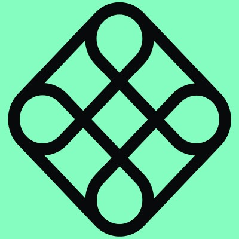
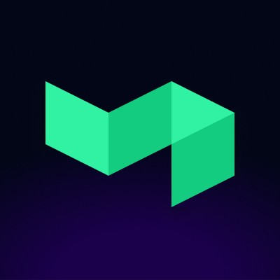
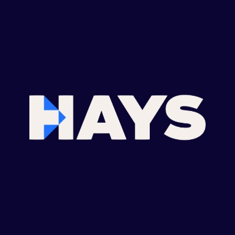

/**
* Hands-on People & Operations leader with 9+ years building the human
* and operational infrastructure behind fast-growing startups.
*/
I build People functions from 0 → 1: org design, technical hiring, culture, comp, compliance, and the systems that hold up under startup pace. I've run full-cycle recruiting through 2x headcount growth (50 → 100 employees in 12 months), and I currently own AI transformation end-to-end — rolling out tooling, playbooks, and enablement across Engineering, GTM, Ops, and People.
I operate like an engineer: instrument the system, automate the manual work, ship measurable outcomes. I partner directly with founders and engineering leadership to make sure People & Ops strategy keeps pace with the business — not just the headcount plan.


